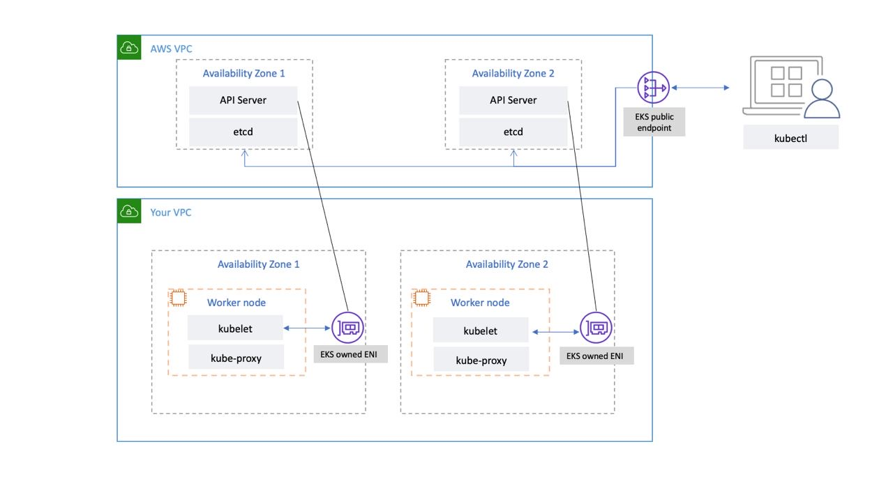

EKS 控制平面¶
Amazon Elastic Kubernetes Service (EKS) 是一项托管的 Kubernetes 服务，可让您无需安装、操作和维护自己的 Kubernetes 控制平面或工作节点，即可轻松在 AWS 上运行 Kubernetes。它运行上游 Kubernetes 并经过 Kubernetes 一致性认证。这种一致性确保 EKS 支持与您可以在 EC2 或本地安装的开源社区版本相同的 Kubernetes API。在上游 Kubernetes 上运行的现有应用程序与 Amazon EKS 兼容。
EKS 自动管理 Kubernetes 控制平面节点的可用性和可伸缩性，并自动替换不健康的控制平面节点。
EKS 架构¶
EKS 架构旨在消除可能影响 Kubernetes 控制平面可用性和持久性的任何单点故障。
由 EKS 管理的 Kubernetes 控制平面运行在 EKS 托管的 VPC 内。EKS 控制平面包括 Kubernetes API 服务器节点、etcd 集群。运行 API 服务器、调度程序和 kube-controller-manager 等组件的 Kubernetes API 服务器节点在一个自动伸缩组中运行。EKS 在 AWS 区域内的不同可用区 (AZ) 中至少运行两个 API 服务器节点。同样，为了持久性，etcd 服务器节点也在跨越三个 AZ 的自动伸缩组中运行。EKS 在每个 AZ 中运行一个 NAT 网关，API 服务器和 etcd 服务器运行在私有子网中。这种架构确保单个 AZ 中的事件不会影响 EKS 集群的可用性。
当您创建新集群时，Amazon EKS 会为托管的 Kubernetes API 服务器创建一个高可用性端点，您可以使用该端点与集群通信(使用诸如 kubectl 之类的工具)。托管端点使用 NLB 来负载均衡 Kubernetes API 服务器。EKS 还在不同的 AZ 中配置了两个 ENI,以促进与工作节点的通信。

您可以配置 Kubernetes 集群的 API 服务器是否可通过公共互联网(使用公共端点)或通过您的 VPC (使用 EKS 托管的 ENI) 或两者都可访问。
无论用户和工作节点是使用公共端点还是 EKS 托管的 ENI 连接到 API 服务器，都有冗余的连接路径。
建议¶
监控控制平面指标¶
监控 Kubernetes API 指标可以让您了解控制平面性能并识别问题。不健康的控制平面可能会影响集群内运行的工作负载的可用性。例如，编写不当的控制器可能会使 API 服务器过载，从而影响您的应用程序的可用性。
Kubernetes 在 /metrics 端点公开控制平面指标。
您可以使用 kubectl 查看公开的指标：
这些指标以 Prometheus 文本格式表示。
您可以使用 Prometheus 收集和存储这些指标。2020 年 5 月，CloudWatch 增加了对 CloudWatch Container Insights 中 Prometheus 指标的监控支持。因此，您也可以使用 Amazon CloudWatch 来监控 EKS 控制平面。您可以使用教程：添加新的 Prometheus 抓取目标：Prometheus KPI 服务器指标来收集指标并创建 CloudWatch 仪表板以监控您的集群控制平面。
您可以在这里找到 Kubernetes API 服务器指标。例如，apiserver_request_duration_seconds 可以指示 API 请求运行所需的时间。
请考虑监控以下控制平面指标：
API 服务器¶
| 指标 | 描述 |
|---|---|
apiserver_request_total |
按动词、dry run 值、组、版本、资源、范围、组件和 HTTP 响应代码划分的 apiserver 请求计数器。 |
apiserver_request_duration_seconds* |
按动词、dry run 值、组、版本、资源、子资源、范围和组件划分的响应延迟分布(以秒为单位)。 |
apiserver_admission_controller_admission_duration_seconds |
按名称识别的准入控制器延迟直方图(以秒为单位)，并按操作和 API 资源和类型(验证或准入)划分。 |
apiserver_admission_webhook_rejection_count |
准入 Webhook 拒绝计数。按名称、操作、拒绝代码、类型(验证或准入)、错误类型(调用 Webhook 错误、apiserver 内部错误、无错误)识别。 |
rest_client_request_duration_seconds |
请求延迟(以秒为单位)。按动词和 URL 划分。 |
rest_client_requests_total |
HTTP 请求数量，按状态代码、方法和主机划分。 |
etcd¶
| 指标 | 描述 |
|---|---|
etcd_request_duration_seconds |
每个操作和对象类型的 etcd 请求延迟(以秒为单位)。 |
etcd_db_total_size_in_bytes 或 apiserver_storage_db_total_size_in_bytes (从 EKS v1.26 开始) 或 apiserver_storage_size_bytes (从 EKS v1.28 开始) |
Etcd 数据库大小。 |
请考虑使用 Kubernetes 监控概览仪表板来可视化和监控 Kubernetes API 服务器请求和延迟以及 etcd 延迟指标。
以下 Prometheus 查询可用于监控 etcd 的当前大小。该查询假设有一个名为 kube-apiserver 的作业用于从 API 指标端点抓取指标，并且 EKS 版本低于 v1.26。
注意
当数据库大小超过限制时，etcd 会发出空间不足警报并停止接受进一步的写入请求。换句话说，集群变为只读，所有对象的变更请求(如创建新 Pod、扩缩 Deployment 等)都将被集群的 API 服务器拒绝。
集群身份验证¶
EKS 当前支持两种身份验证类型：持有者/服务帐户令牌和使用 Webhook 令牌身份验证的 IAM 身份验证。当用户调用 Kubernetes API 时，Webhook 会将请求中包含的身份验证令牌传递给 IAM。该令牌是由 AWS 命令行界面 (AWS CLI) 生成的一个 base64 签名 URL。
创建 EKS 集群的 IAM 用户或角色会自动获得对集群的完全访问权限。您可以通过编辑 aws-auth configmap 来管理对 EKS 集群的访问。
如果您错误配置了 aws-auth configmap 并丢失了对集群的访问权限，您仍然可以使用集群创建者的用户或角色来访问您的 EKS 集群。
在极少数情况下，如果您无法在 AWS 区域中使用 IAM 服务，您也可以使用 Kubernetes 服务帐户的持有者令牌来管理集群。
创建一个"超级管理员"帐户，允许在集群中执行所有操作：
创建一个角色绑定，将 cluster-admin 角色授予 super-admin:
kubectl create clusterrolebinding super-admin-rb --clusterrole=cluster-admin --serviceaccount=kube-system:super-admin
获取服务帐户的 secret：
SECRET_NAME=`kubectl -n kube-system get serviceaccount/super-admin -o jsonpath='{.secrets[0].name}'`
获取与 secret 关联的令牌：
将服务帐户和令牌添加到 kubeconfig:
在 kubeconfig 中设置当前上下文以使用 super-admin 帐户：
最终的 kubeconfig 应如下所示：
apiVersion: v1
clusters:
- cluster:
certificate-authority-data:<REDACTED>
server: https://<CLUSTER>.gr7.us-west-2.eks.amazonaws.com
name: arn:aws:eks:us-west-2:<account number>:cluster/<cluster name>
contexts:
- context:
cluster: arn:aws:eks:us-west-2:<account number>:cluster/<cluster name>
user: super-admin
name: arn:aws:eks:us-west-2:<account number>:cluster/<cluster name>
current-context: arn:aws:eks:us-west-2:<account number>:cluster/<cluster name>
kind: Config
preferences: {}
users:
#- name: arn:aws:eks:us-west-2:<account number>:cluster/<cluster name>
# user:
# exec:
# apiVersion: client.authentication.k8s.io/v1alpha1
# args:
# - --region
# - us-west-2
# - eks
# - get-token
# - --cluster-name
# - <<cluster name>>
# command: aws
# env: null
- name: super-admin
user:
token: <<super-admin sa's secret>>
准入 Webhook¶
Kubernetes 有两种类型的准入 Webhook：验证准入 Webhook 和变更准入 Webhook。这些允许用户扩展 kubernetes API，并在对象被 API 接受之前对其进行验证或变更。配置不当的这些 Webhook 可能会通过阻止集群关键操作来破坏 EKS 控制平面的稳定性。
为了避免影响集群关键操作，请避免设置"全捕获"Webhook,如以下内容：
- name: "pod-policy.example.com"
rules:
- apiGroups: ["*"]
apiVersions: ["*"]
operations: ["*"]
resources: ["*"]
scope: "*"
或者确保 Webhook 具有失效开放策略，超时时间短于 30 秒，以确保如果您的 Webhook 不可用，它不会损害集群关键工作负载。
阻止具有不安全 sysctls 的 Pod¶
Sysctl 是一个 Linux 实用程序，允许用户在运行时修改内核参数。这些内核参数控制操作系统行为的各个方面，如网络、文件系统、虚拟内存和进程管理。
Kubernetes 允许为 Pod 分配 sysctl 配置文件。Kubernetes 将 sysctl 分为安全和不安全两类。安全的 sysctl 在容器或 Pod 中是命名空间化的，设置它们不会影响节点上的其他 Pod 或节点本身。相反，不安全的 sysctl 默认情况下是禁用的，因为它们可能会干扰其他 Pod 或使节点不稳定。
由于不安全的 sysctl 默认情况下是禁用的，kubelet 将不会创建具有不安全 sysctl 配置文件的 Pod。如果您创建这样的 Pod，调度程序将反复将此类 Pod 分配给节点，而节点将无法启动它。这个无限循环最终会给集群控制平面带来压力，使集群不稳定。
请考虑使用 OPA Gatekeeper 或 Kyverno 来拒绝具有不安全 sysctl 的 Pod。
处理集群升级¶
自 2021 年 4 月起，Kubernetes 发布周期已从每年四次(每季度一次)更改为每年三次。新的次要版本(如 1.21 或 1.22)大约每 15 周发布一次。从 Kubernetes 1.19 开始，每个次要版本在首次发布后大约支持 12 个月。随着 Kubernetes v1.28 的推出，控制平面和工作节点之间的兼容性偏差已从 n-2 次次要版本扩展到 n-3 次次要版本。要了解更多信息，请参阅集群升级的最佳实践。
运行大型集群¶
EKS 会主动监控控制平面实例的负载，并自动对其进行扩缩以确保高性能。但是，在运行大型集群时，您应该考虑 Kubernetes 内部可能存在的性能问题和限制以及 AWS 服务中的配额。
- 根据 ProjectCalico 团队执行的测试,具有 1000 多个服务的集群在使用
iptables模式的kube-proxy时可能会遇到网络延迟。解决方案是切换到以ipvs模式运行kube-proxy。 - 如果 CNI 需要为 Pod 请求 IP 地址或者您需要频繁创建新的 EC2 实例，您也可能会遇到 EC2 API 请求限制。您可以通过配置 CNI 来缓存 IP 地址来减少对 EC2 API 的调用。您可以使用更大的 EC2 实例类型来减少 EC2 扩缩事件。